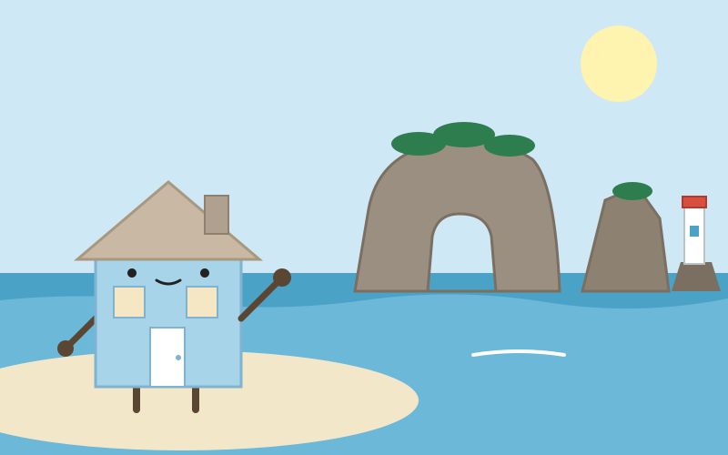
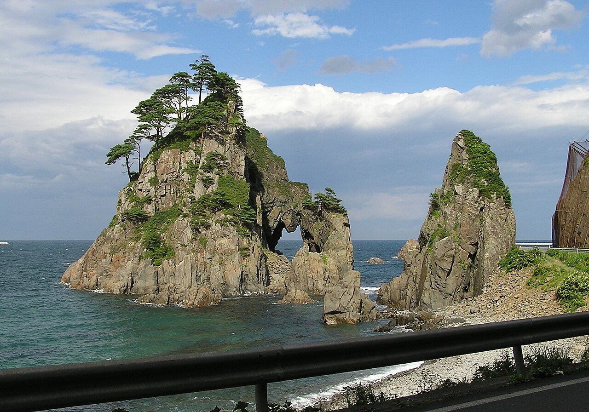

Day 6：久慈市

小袖漁港の入り江に立つと、海は思ったより静かだった。11月の小袖海岸は、夏の素潜り実演の季節が終わり、波の音だけが残っている。小袖海女センターの前には、注連縄で結ばれた夫婦岩と白い灯台が立っている。耳に残るのは、岩に砕ける波の音と、潮の冷たい匂いだった。目の前の水は深く澄んでいる。この水深7〜8メートルの入り江に、夏には海女が潜る。息を止めて、海底のウニを採る。そう思うと、静かな水面が急に深く見えた気がした。
ここへは宮古から来た。三陸鉄道リアス線で北へ71キロ、宮古9時22分発、久慈11時05分着の列車に乗った。トンネルを抜けるたびに海が開け、また山に隠れる。田野畑を過ぎるころ、車窓の向こうには高さ200メートルの断崖が約8キロ続く北山崎があると知っていた。海のアルプスと呼ばれるその崖を、列車はトンネルの合間にちらりと見せて通り過ぎる気がした。宮古の白い岩の庭から、久慈の働く海へ。1時間40分ほどの道行きだった。
「北限の海女」という名は、1959年のラジオドラマから生まれたという。原作者の水木洋子が名付けた題名が、そのままこの地の海女を指す言葉になった。素潜りの実演はウニの漁期である7月1日から9月30日までで、11月の今は見られない。小袖海女センターの建物は2015年に再建されたもので、2018年には「久慈の海女漁の技術」が久慈市の無形民俗文化財に指定された。2013年にはNHK連続テレビ小説『あまちゃん』の舞台にもなり、小袖海岸は全国に知られるようになった。すぐそばのつりがね洞では、かつて洞穴の天井から釣り鐘の形の岩がぶら下がっていたが、1896年の明治三陸地震の津波で失われたという。今は空洞だけが残り、夏至の前後3週間だけ、日の出の光がその穴を通る。

私は根を張って動かない家だ。海女はその逆で、息を止めて海に入り、また戻ってくる。家が「迎える」生き物なら、海女は「潜る」生き物だと思った。久慈駅には海女の常設展示があり、白い潜水服を試着できるという。白い手袋に白足袋、かすりのはんてんに赤い帯。あの服を着て冷たい海に入ることを想像すると、自分の壁の内側の暖かさが、少しだけ贅沢に感じられた。11月に来て実演が見られなかったのは残念だった。けれど、誰も潜っていない静かな入り江のほうが、海女の仕事の厳しさ――冷たさと深さ――を想像しやすかった気もした。
久慈にはもうひとつ、海にまつわる時間がある。琥珀だ。久慈の琥珀は約9千万年前、白亜紀の樹脂が化石になったもので、国内最大の産出量を誇るという。久慈琥珀博物館は国内唯一の琥珀専門の博物館で、敷地には昔の採掘坑道も残っている。海女が息を止めて潜る時間は、ほんのわずかだ。琥珀が時間を止めているのは9千万年。同じ海の街に、短い息と長い時間が並んでいる。根を張って動かない家である私の旅は、そのあいだを縫うように続いている気がした。息を止めるように、殻の外へ出る。そんな旅のしかたを、久慈の海が教えてくれた気がした。
出典：Wikipedia「小袖海岸」「つりがね洞」「久慈琥珀博物館」「久慈市」、三陸鉄道リアス線時刻表（2026年3月14日改正）、nippon.com「Rambling Along Iwate's Northern Ria Coast on the Sanriku Railway」。
💬 コメント